Namegata, Ibaraki: things to do, food and stays
Namegata · Ibaraki
Namegata
Highlighted on the Ibaraki map.

Stay
モビリタコート行方（旧カスミテラス霞ヶ浦）

Mobiritakoto Namegata (Kyu Kasumi Terrace Kasumi Ke Ura)
Inn in Aso, Namegata with lakeside location.
北浦宝来温泉つるるんの湯宿 北浦湖畔荘
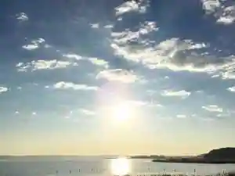
Kitaura Horai Onsen Tsururunno Yuyado Kitaura Kohan So
Inn at Kitaurahorai Onsen in Yamada, Namegata with lakeside location.
Dining
麺や 虎徹

Men Ya Kotetsu
ラーメンショップ 椿 玉造店
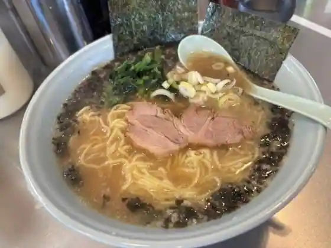
Ramen Shoppu Tsubaki Tamatsukuri
行方市観光物産館こいこい
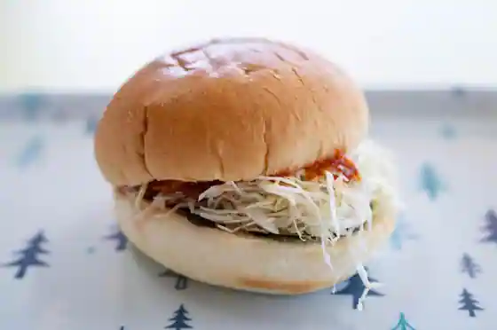
Namegata Shi Kanko Bussan Kan Koikoi
恵比寿
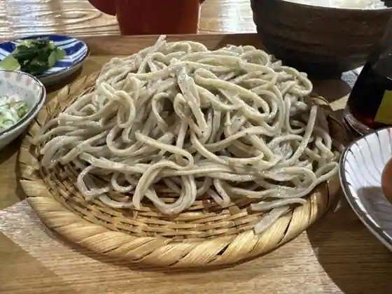
Ebisu
みのり食堂
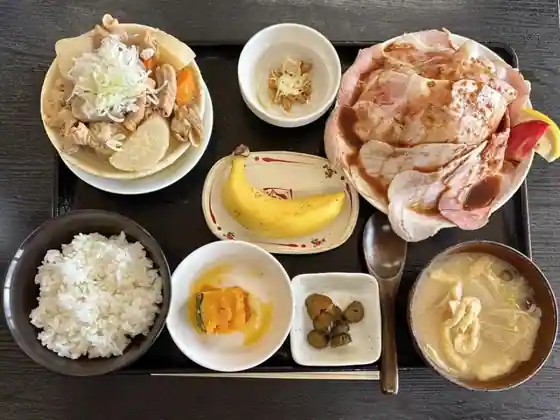
Minori Shokudo
食べ処 わたなべ
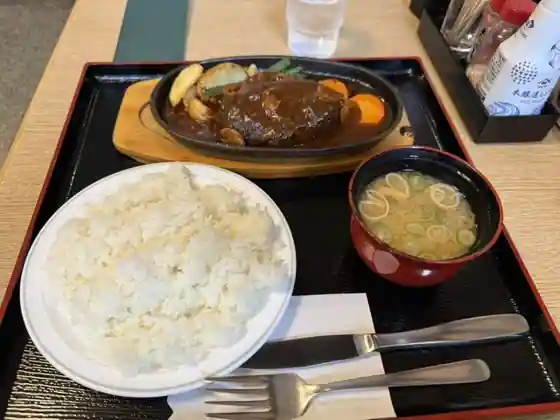
Tabe Tokoro Watanabe
菓心松屋
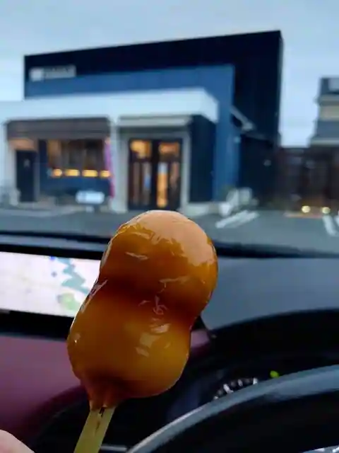
Ka Kokoro Matsuya
サクラ カフェ
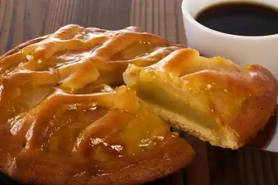
Sakura Cafe
セントラルゴルフクラブ
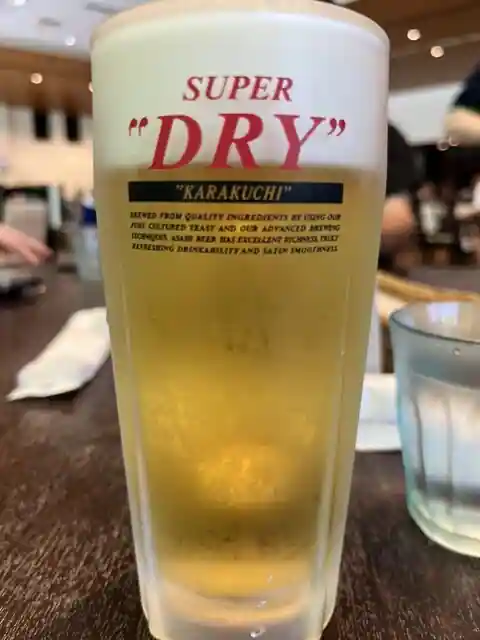
Sentorarugorufukurabu
天霧 玉造店
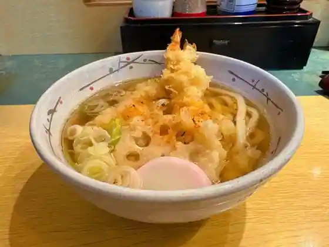
Amagiri Tamatsukuri
蔵太鼓 麻生店
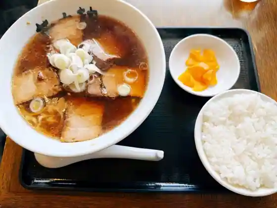
Kura Taiko Aso
イル リストランテ Farm to the Table なめがた
Iru Risutorante Farm to the Table Namegata
玉造ゴルフ倶楽部 若海コース
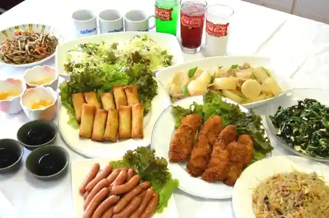
Tamatsukuri Gorufu Kurabu Jaku Umi Kosu
藤屋
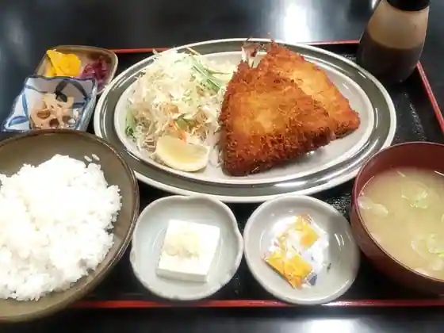
Fujiya
NAMEGATA 米こ バウムクーヘン
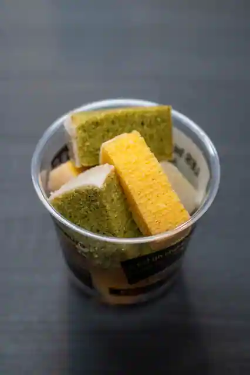
NAMEGATA Kome Ko Baumukuhen
ピットイン
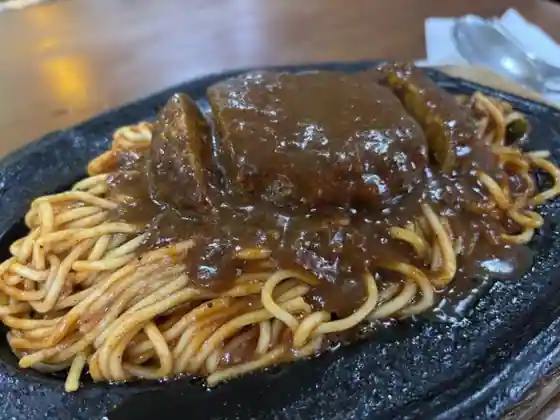
Pittoin
とんかつキいち
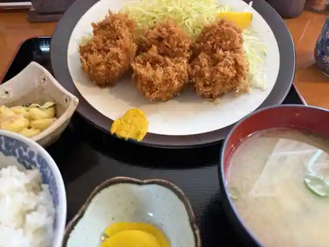
Tonkatsu Ki Ichi
一葉亭
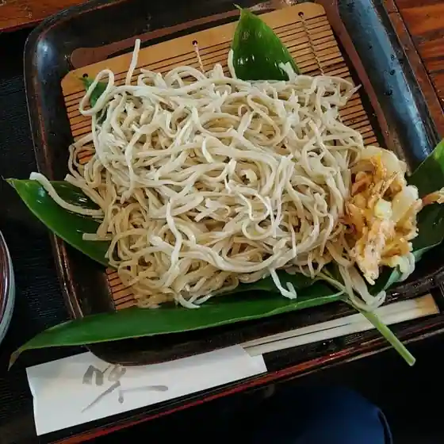
Ichiyo Tei
和の蔵
Nagono Kura
味喜び
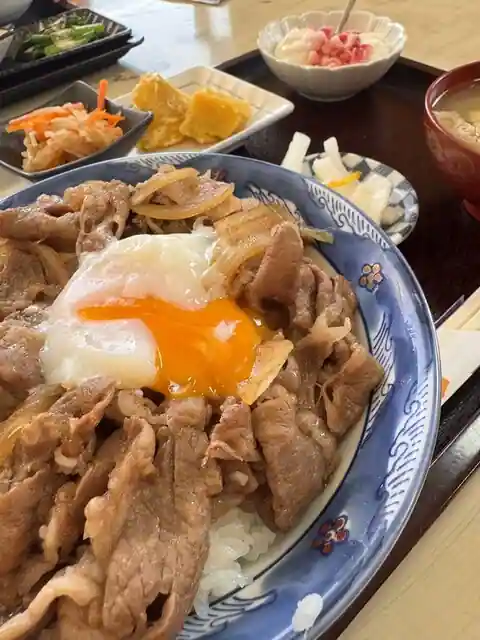
Aji Yorokobi
あそう温泉 白帆の湯 水郷の間
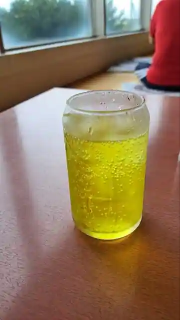
Aso Onsen Shiraho No Yu Suigo No Kan
日乃出
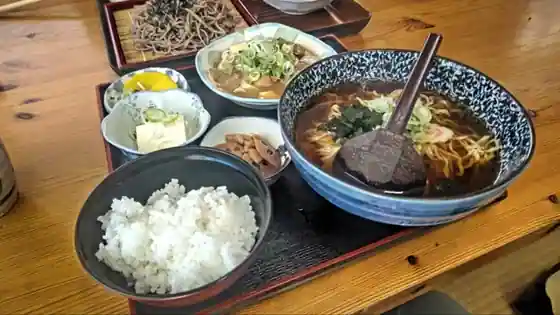
Nichi No Shutsu
Sights
Rapoppo Namegata Famazuvirejji

Kasumigaura
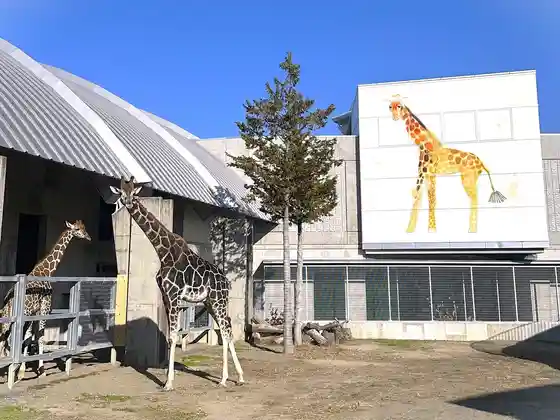
Sairen Tera
Aso Onsen Shiraho Baths Ten'o Saki Kanko Koryu Center Koterasu

Ten'o Saki Park
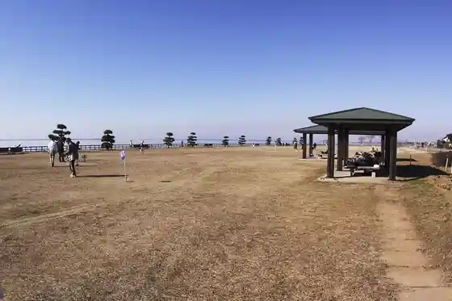
Roadside Station Tamatsukuri Kanko Bussan Kan Koikoi
Tanaka Orchard (Namegata)
Kanko Ho Hiki Fune (Namegata)
JA Nosambutsu Chokubai Tokoro Raku Sato
Lakeside no Yado Kogetsu
Haguro Yama Park
Aso Han Karo Yashiki Memorial Museum
Kitaura Onsen Kitaura So
Okinosu Chiku
Kitaura Horai Onsen Tsururun no Yuyado Kitaura Kohan So
Oyama Shu Oba Kakyo Samurai Residence
Mori Saku Ichigo Sono
Manju Yama (Manju Yama)
no Sushoakantorii Club
Maeda Engei
Kubota Farm
no Sushoakantorii Club Kitaura Kosu